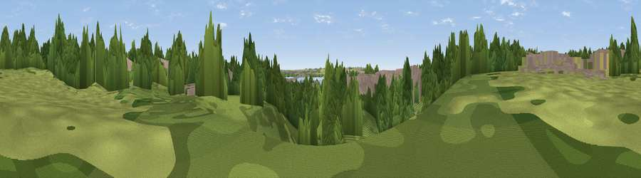

Viewpoint near Hessle
#46258 in England · top 99% of its area beats it · near HessleThe view, rendered

A 360° render of this exact spot computed from the terrain model, tree cover and land cover — summer colours, afternoon light, calibrated against photographs of famous viewpoints. Real trees, hedges and buildings will differ in detail.
The panorama
Grey silhouette: terrain skyline in each direction (720 bearings, Earth curvature and refraction included). Dashed green: skyline with trees (+15 m) and buildings (+8 m) as obstacles. Blue strip: how far the ground is visible on each bearing.
Where the view opens
Wedge length = distance to the farthest visible ground on that bearing (vegetation-aware). Rings at 10, 25 and 50 km.
What fills the view
71% woodland · 16% built-up · 10% water · 2% cropland ·
Angular shares of the visible panorama (visual magnitude), not map area. Landscape diversity 0.38 (0–1 Shannon).
Key numbers
More beautiful places nearby
The staircase of upgrades: each row has a higher view potential than everything closer. Driving times are estimates from straight-line distance, calibrated against real road routing — check an actual route before setting out.
| Place | Direction | Drive | Score |
|---|---|---|---|
| Viewpoint near Hessle | SE · 1 km | ~2 min | 47.5 |
| Viewpoint near Hessle | WNW · 1 km | ~2 min | 50.4 |
| Viewpoint near Willerby | N · 5 km | ~11 min | 57.9 |
| Viewpoint near South Ferriby | SSW · 6 km | ~13 min | 58.1 |
| Viewpoint near South Cave | NW · 11 km | ~21 min | 60.9 |
| Viewpoint near South Newbald | NW · 12 km | ~23 min | 62.3 |
| Viewpoint near South Newbald | NW · 12 km | ~23 min | 64.9 |
| Viewpoint near Nunburnholme | NW · 26 km | ~43 min | 68.5 |
53.72128, -0.45641 · source: osm viewpoint · position refined by local search. Computed location — check access rights before visiting.